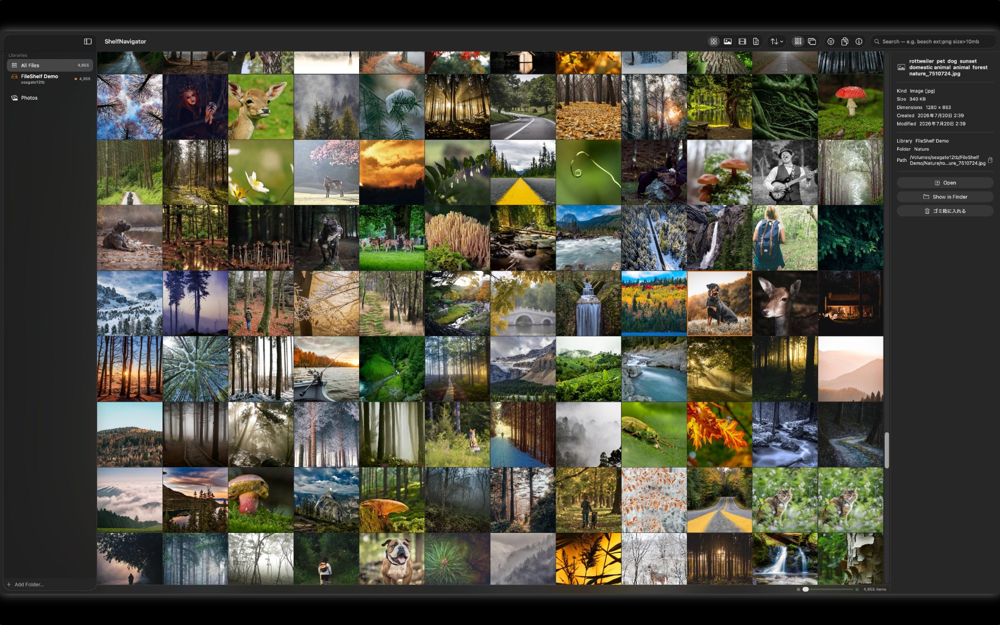
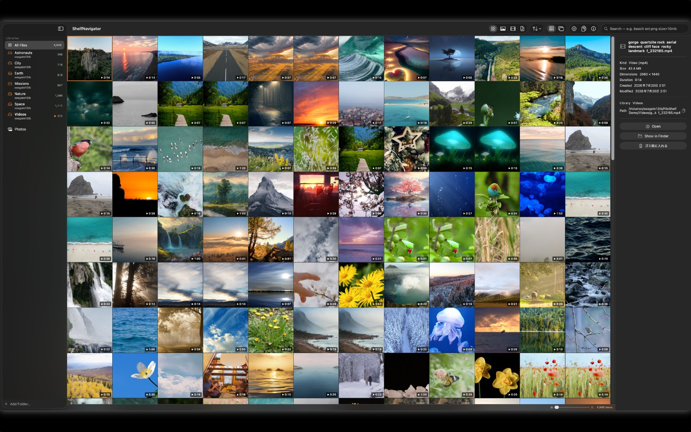
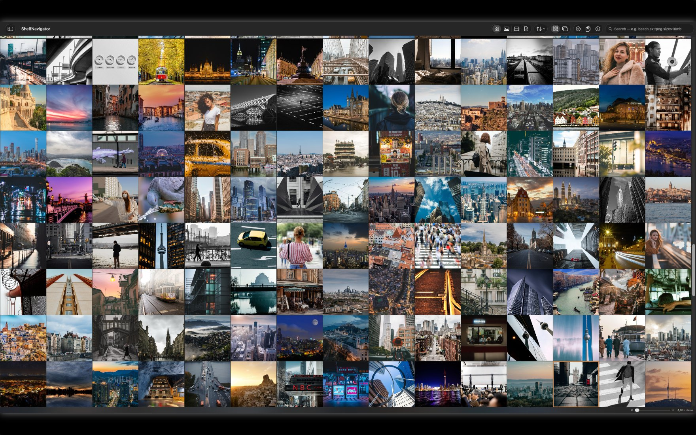
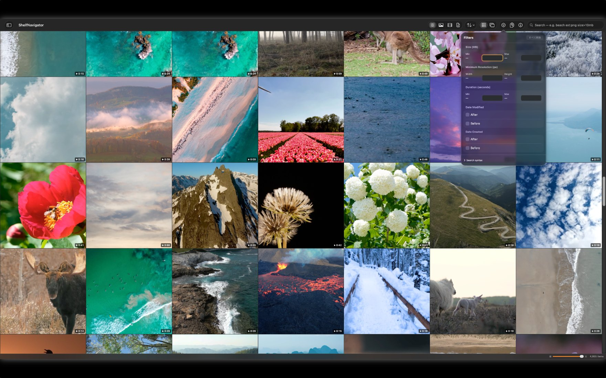
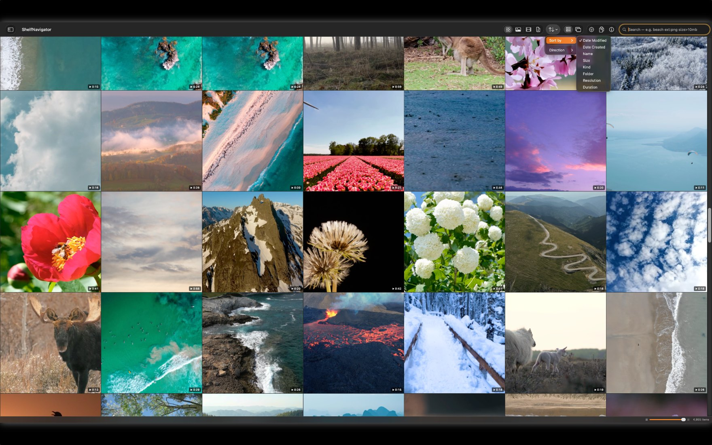
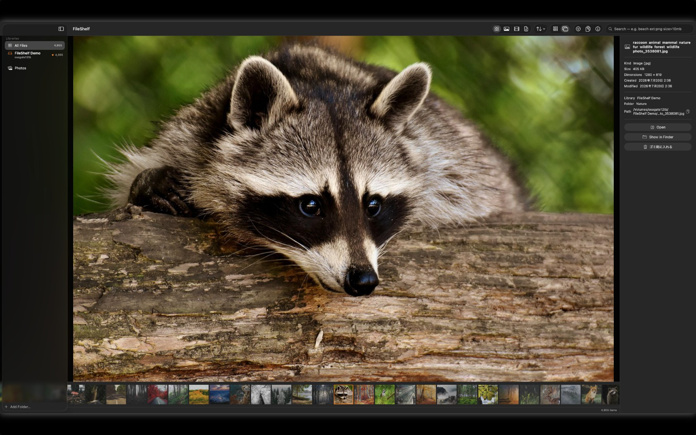
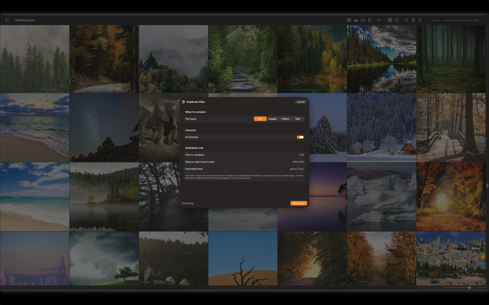

フォルダもドライブも、
ひと目で。
散らばったフォルダと外付けドライブを、1つの棚にまとめる macOS 用ビューア。

ファイルは、フォルダや外付けドライブ、何年分ものダウンロードに散らばっていきます。どこに何があるのか、だんだん分からなくなります。

フォルダは何個でも登録できます（内蔵・外付け・ネットワーク）。それらが1つのグリッドに並びます。コピーも取り込みも整理も不要。ファイルは元の場所に置いたままです。
外付けを取り外しても、その中身は一覧に残ります。どのドライブに入れたか思い出せなくても、検索で見つかります。
カタログはローカルの索引なので、数十万件でもスクロールは滑らかで、検索は即座です。新しいファイルや変更は、バックグラウンドで自動的に反映されます。

普通の言葉でも、正確な指定でも検索できます。
サイズ・解像度・長さ・日付はパネルから、Finder タグはサイドバーから絞り込めます。


サムネイルの大きさを変えられるタイル表示と、フィルムストリップ付きのプレビュー表示。動画はアプリ内で再生でき、QuickTime が開けない形式にも対応します。テキストファイルは中身を表示。RAW 写真にも対応しています。


Finder のタグを読み取り、サイドバーに表示します。任意のファイルを Finder で表示できます。ファイルの種類ごとに開くアプリを指定できますが、システムの既定は変更しません。
登録したすべてのフォルダを横断し、名前ではなく内容で比較します。一致したファイルは、移動する直前にもう一度バイト単位で検証されます。

ShelfNavigator がファイルを消去することはありません。削除はゴミ箱への移動で、⌘Z ですぐに元へ戻せます。
通信機能を持たないため、ファイルの情報が外部へ出ることはありません。